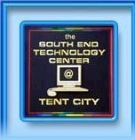

South End Tech Center @ Tent City

Location:
Boston, MA
The South End Technology Center @ Tent City (The Tech Center) is a collaborative venture between the Tent City Corporation (TCC) and the Massachusetts Institute of Technology (MIT). Our fundamental purpose is to enable people to become producers of knowledge and sharers of ideas and information. Our scope and methods are as diverse as the people we serve. We provide free or low-cost access and training in most aspects of computer-related technology. The staff, mostly volunteers, have extensive backgrounds in computer technology and their applications.
WHAT WE DO:
The goals of the Tech Center are as follows:
Recruit and train persons in computer technology who have been excluded from the technological revolution and are at an increased risk of joblessness.
Encourage community residents to use information technology as a means of personal and professional development.
Help residents move from being consumers of information to producers and creators of knowledge.
Supported Projects
Youth Environmental Technology Education
Angela Perondi Pitel
8/2003 — 8/2004
The main goal of the Fuel Cell education initiative at the South End technology Center is to promote access and to expose the youth, at an early age, to science and cutting-edge technologies. Our goal is to grant access of new technologies to students of color that make up 85% of Boston school’s population and are frequently left behind. We want to bring the youth from behind and position them at the front end of this emerging technology and into the environmental issues that are significant in our society today.
The fuel cell education program is working on three different fronts to reach this goal:
• Primarily, we are aiming to work closely with educational institutions such as the Boston Renaissance Charter School and the Boston Public Schools to develop and implement a fuel cell technology unit for the middle school students. The idea is to promote a change in their awareness of the technology, and create access to a broader number of students throughout the school system.
• The program also exposes the children attending the SETC to this forefront technology. The fuel cell is considered one of the most promising energy technologies of the future.
• In addition, we are attempting to reach the broader community and make them aware of fuel cell technology and its potential by participating in the AltWheels Festival (alternative transportation festival). We will be exhibiting fuel cell car models and talking about the technology and its potential to the general public.
Angela’s accomplishments included the development of a 100- page curriculum unit that included a Teacher’s Guide and a Student’s Guide for middle school students (8th grade level) on hydrogen fuel cells and engineering design technologies. The development of the curriculum unit was the stepping stone to establishing stronger relationships with institutions such as the Boston Renaissance Charter School, the Boston Public Schools, and the Roxbury Community College.
The development of this curriculum unit was just the start of several initiatives designed to share the knowledge of this technology with students, teachers and young adults. Angela had the opportunity to teach the unit to an after school class with students enrolled at the New Beginners after school program at Roxbury Community College (RCC). The after school program reinforces environmental technology education at the community level, where students from 13 to 16 years old learn about clean energy technology.
CTC Program Building
Shubhada Kambli
8/2002 — 8/2003
As an Americorps VISTA member at the South End Tech Center, Shubhada has worked to set up a fuel cell/sustainable energy education program for area youth.
Shubhada has educated herself about fuel cells through attending conferences, online research, and networking with engineers. She has begun to teach her peers and SETC users about fuel cells and is building relationships in the city to support her project.
• MIT and Roxbury Community College to support the program. RCC is buying three fuel cell models for the program.
• Boston Public Schools may introduce fuel cells in the eighth grade science curriculum.
• Nuvera will support program with tours for kids.
• Museum of Science interested in our efforts.
Shubhada has done a remarkable job in trying to build a seamless approach to the fuel cell project, starting with her own understanding then reaching out to institutions and working to connect them to each other.
CTC Support and Program Building
Jason Floyd
6/2002 — 6/2003
Set up multiple youth education programs, maintain our CTC, and provide network security.
Jason Worked with MIT Graduate Students for a summer learning program with youth and provided network support and administration of 25+ machines at our CTC. Jason aldo maintained network support for employees and instructors on a daily basis; including lab setup and supervision; equipment maintenance and administration; in house and phone technical support; file/print/terminal server and workstation performance monitoring, repair, and configuration; troubleshooting connectivity issues for local area network. Jason also administered and instructed web design, A+ Certification, MS Office; and youth technology programs.
Jason led our Network Security Enhancement including installation of Security Software on the Network and Client Machines (Fortres 101) which has led to an 75% increase in system performance along with anti-virus and firewall software on all machines not including two which are designated for other purposes
Beginning April 8th 2003 youth will be given the opportunity to learn skills in video production including the Final Cut Software, Film and Television Studio Technologies and Techniques, Web Design using HTML, Photoshop, Dreamweaver via classes set up by Jason.
Related Content
None created yet!